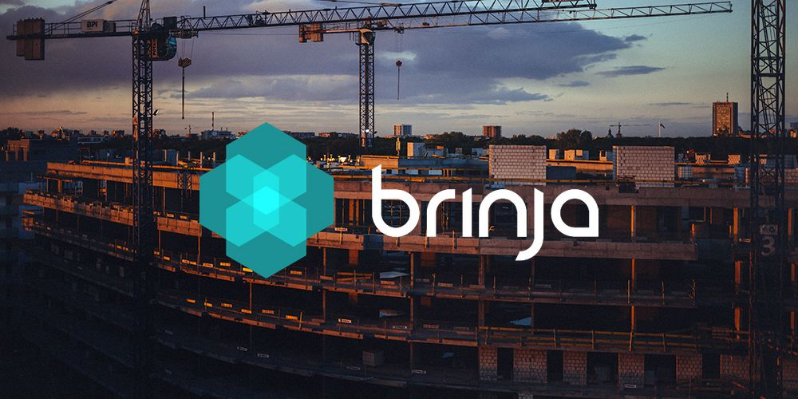

Bachelor thesis in mechanical engineering: product development and design performed at Brinja AB, a company that develops advanced technical solutions for safety within the construction industry.
One of their products were in need of a new design and in this project we aim to improve this product using design thinking methodology.
The product at hand is a sensor solution for concrete measurement that is used to measure the concrete's temperature and humidity to ensure that the concrete is properly cured.
In this thesis, we propose an improved design of the encapsulation of this product to make it more durable and user-friendly while also not excceeding any cost requirements.
The greatest challenge in this project was to improve the encapsulation while still fulfilling the requirements from Brinja such as cost, user-friendliness, mechanical properties such as water and dust resistance.
Design choices for user-friendliness were limited due to requirements on mechianical properties, and also limited by the choice of materials and manufacturing techniques, which in turn were limited by costs.
This made the development process more challenging than initially expected.
The major insight in this project was that product development with meaningful constraints can make the development process incredibly complicated.